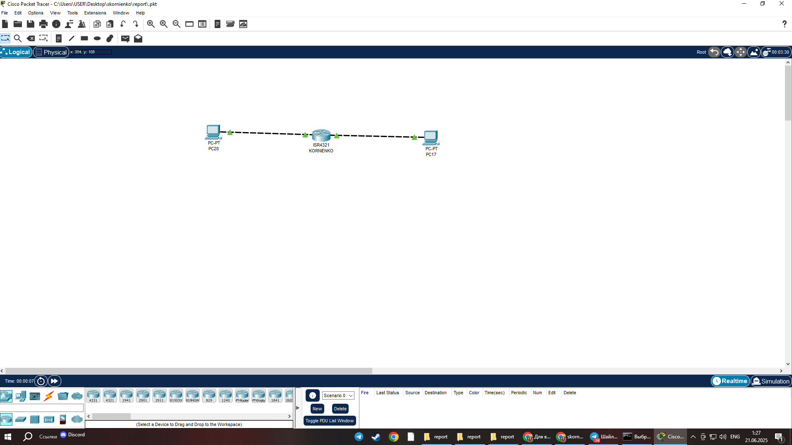

Физическая топология
На схеме представлена конфигурация сети с роутером (FamiliaIO), двумя коммутаторами и двумя компьютерами.
Настройка устройств

1. Настройка роутера: изменено имя устройства на KORNIENKO

2. Назначение IP-адресов с третьим октетом 1
Проверка работоспособности

Успешная проверка связи между устройствами сети.
Выводы
В ходе лабораторной работы была успешно настроена сеть, все устройства корректно взаимодействуют друг с другом. Основные параметры соответствуют требованиям задания.